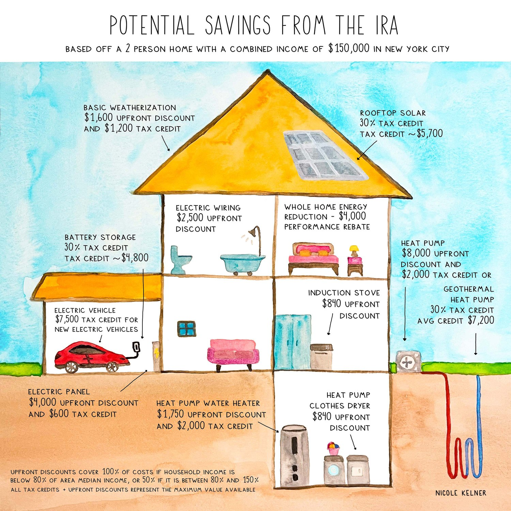

Arts and Climate Change
A client-facing studio for climate and energy organizations: research turned into a narrative people act on.
- Role
- Founder
- Timeline
- 2022 – Present
- Clients
- U.S. Department of Energy, Rocky Mountain Institute, Sunrun, The Guardian, and others
- Team
- Solo studio, project-based fact-checking
- Outcome
- 250,000 impressions on the flagship guide · 55,000-follower audience
In short
- ProblemClimate and energy organizations sit on technical, regulated knowledge that the people it affects, homeowners, residents, sometimes their own internal stakeholders, cannot act on, because it is written for experts.
- ApproachI interview the scientists, engineers, and founders who hold that knowledge, then synthesize it into a narrative organized around how a person actually experiences the problem, not how the institution structures it.
- ResultA studio with a recurring client roster in complex, regulated industries. Its flagship deliverable, an illustrated guide to the Inflation Reduction Act, reached 250,000 impressions and was adopted by local governments nationwide.
The problem
Organizations working on the hard parts of the climate transition, federal loan programs, utilities, grid-scale storage, distributed energy, sit on technical and market knowledge that almost nobody outside the organization can use. Not because the information is hidden, but because it is written the way the institution is organized rather than the way a reader thinks.
I started Arts and Climate Change to run that translation as a practice rather than a one-off favor. The studio now works with clients including the U.S. Department of Energy's Loan Programs Office, Rocky Mountain Institute, Sunrun, The Guardian, Scale Microgrid Solutions, NineDot Energy, and Project Drawdown.
How I work
Every engagement starts the same way: interview the scientists, engineers, and founders who actually hold the knowledge, then synthesize the technical and market detail into something a non-expert audience can act on. The synthesis step is where most versions of this work fail, because the easy move is to reorganize the institution's own categories more clearly.
People do not think in incentive categories, funding mechanisms, or program names. They think in rooms, and in things they already own or are about to replace. The work is finding that entry point and building the narrative around it, not around the org chart that produced the information.
Organize it the way a person experiences the problem, not the way the institution appropriated the budget for it.
A case in point: the flagship guide
The clearest example is the studio's illustrated guide to the Inflation Reduction Act, fact-checked with Rewiring America. The IRA put thousands of dollars of home electrification incentives within reach of ordinary households, and almost nobody could tell which ones applied to them. Some of it is a tax credit you claim next April. Some of it is a discount at the point of sale. The agencies published all of it accurately and none of it usefully, and the result was a market where the money existed and the demand didn't.
Decisions and tradeoffs, on the flagship guide
Grouping by tax credit versus rebate, which is how every official source does it.
A reader arrives with a room and an appliance in mind, not a policy mechanism. Sorting by mechanism means they have to read all of it to find out whether any of it is theirs. Sorting by place in the house means they can find themselves in it in about four seconds.
Accurate ranges covering every income band and filing status.
Ranges are more defensible and less useful. I picked one household, stated the assumptions in the subtitle, and put the eligibility rules in a footnote. A real number a reader can compare to a real quote beats a correct interval nobody can act on.
One combined "savings" number per item, which reads better.
They behave differently. One reduces the price you pay in the store, the other arrives months later and only if you owe tax. Collapsing them into a single figure would have been the one simplification that actively misleads.
An interactive calculator with address and income inputs.
A calculator is a better product and a worse artifact. An image travels: it gets screenshotted into group chats, pasted into city newsletters, and printed for a library table. Reach was the whole point, and a URL that needs a form filled in does not reach.
What shipped
One drawing of a cutaway house, with every incentive attached to the thing it pays for. Rooftop solar on the roof, the battery on the garage wall, the EV in the driveway, the heat pump outside the bedroom, the induction stove in the kitchen, the heat pump water heater and dryer in the basement, the panel and the geothermal loop where they actually live.

Results
The honest caveat: impressions and adoption are what I can measure. I have no attribution on the thing that actually matters, which is whether anyone installed a heat pump because of it. That is the number I would want instrumented if I were doing this inside a company.
Beyond the flagship piece
The studio's other engagements are narrower and less public: interviewing a scientist or a founder, then turning the transcript into a brief a non-expert stakeholder can actually use. I also design and lead workshops on this kind of translation work at Harvard, MIT, NYU, and American University, and have run four cohorts of an original climate education program from curriculum through delivery.
What I'd do next
Close the loop between the explainer and the enrollment. The guide ends at "this incentive exists"; the interesting question is what fraction of readers get as far as a quote, and which of the twelve upgrades actually converts. Attach that instrumentation and this stops being outreach and starts being a top-of-funnel channel with a measurable cost per enrolled device.